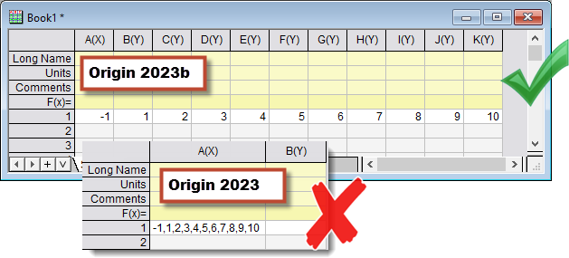

-1, 1, 2, 3, 4, 5, 6, 7, 8, 9, 10

-1,1,2,3,4,5,6,7,8,9,10
Letztes Update: 18.04.2023
Um mit Komma getrennte Daten (einschließlich Komma + Leerzeichen als Trennzeichen) zu kopieren und direkt in ein Origin-Arbeitsblatt einzufügen, führen Sie bitte ein Upgrade für Ihr Origin auf Version 2023b und höher durch.
Kopieren Sie zum Beispiel die folgenden Daten in Origin ein:
|
|
|---|
|
|
|
|  |
Schlüsselwörter:Daten kopieren-einfügen, Trennzeichen Komma, Trennzeichen Leerzeichen, Word365-Daten, Komma gefolgt von Leerzeichen, Komma + Leerzeichen als Trennzeichen